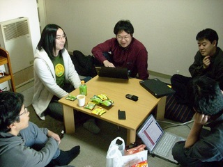
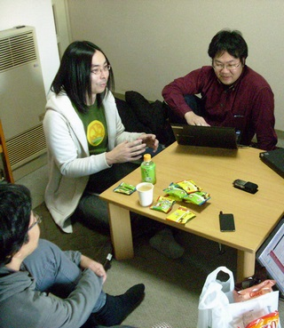

Rubyist Hotlinks 【第 31 回】 樽家昌也さん
はじめに
著名な Rubyist にインタビューを行う企画「Rubyist Hotlinks」。 第 31 回となる今回は、Windows 固有のバグや再現性の低いバグの修正と、「require の高速化」などの効率向上に熱心な、Ruby のコミッタでもある樽家昌也さん (たるいさん) にお話を伺いました。
では、お楽しみください。

プロフィール
- 好きな言葉
- なんとかなる
- 尊敬する人
- アウトプットをちゃんと出してる人
- ご本人のサイト
- tarte記録
インタビュー
- 聞き手
- ささだ
- 語り手
- たるいさん
- 野次馬
- 遠藤さん、卜部さん、artonさん、郡司さん
- 日にち
- 2013 年 1 月 20 日
- 場所
- ささだ宅
目次
プロフィール
生年月日、出身地
: 
ささだ 今日はよろしくお願いします。
たるい よろしくお願いします。
一同 よろしくお願いします。
ささだ いつになくアットホームな雰囲気で。
たるい まさにアットホームで (笑) 1
ささだ えっと、生年月日、出身地、現住所、家族構成、いずれも差し支えない範囲で。
たるい はい。ええと、1976 年の 12 月 28 日生まれ。
ささだ こないだ誕生日だったんだ。
たるい うん、こないだ誕生日です。
一同 おめでとうございます。
たるい ありがとうございます。出身地は神戸で、いまは横浜ですね。家族構成は独り身。
ささだ 独り身、同じですね。今日は、たるいさんと二人きりだったら「婚活どうしようか」みたいな話をしようと思っていました。
一同 (笑)
たるい それは重要だよね (笑) いやむしろ経験者に聞く、みたいなほうがいいのかな。
ささだ 今回は経験者がたくさん居るから (笑) まあ、気が向いたらやりましょう。
好きな言葉、座右の銘
ささだ 好きな言葉、座右の銘は？
たるい 座右の銘、みんな適当なこと言ってますよね。人生万事塞翁が馬とか、なるようになるさとか、いいなーって感じなんですけど。みんな似たようなこと言ってるんで、どうしようかと思って。2
遠藤 どうしようかなあって、好きな言葉は好きな言葉じゃないですか。
たるい とりあえずねえ、「なんとかなるよね」。
ささだ なんとかなってますか？
たるい まあ今のところ、なんとか。
尊敬する人
ささだ 尊敬する人。
たるい 尊敬する人、そうですねえ。アウトプットをちゃんと出してる人は偉いなあって思いますねえ。
ささだ それ、アウトプット出してる人、ですよね (笑)
たるい ささださんはいっぱい出してるじゃないですか。
ささだ 最近出してないので。やばいです。
たるい 最近出してなくてやばいとは、会社的にってこと？
卜部 まあ、出し続けるのは難しいですよね。波があるのはしゃあないよね。
ささだ たるいさんは、会社で出してるんですか？
たるい 会社でも。まあ、それは。。。
ささだ 具体的な人ってわけじゃなくて、「アウトプット出す人」を尊敬、みたいな感じですか。
たるい そうそう、具体的な人。うーん、よくわからない。
ささだ 言うと角が立つ、と。
たるい じゃあ、ここにいるみなさんということで。
遠藤 Matz 5 ではない (笑)
たるい やー、すごいですよね、いろいろ。みんな出してて。えらいなあって思って。プレゼンとかも。
ささだ ねえ、プレゼンいまみんなすごいですよね。プレゼンテーション Zen6 とかみんな読んでるのかな。

たるい 意識高い人が多い。
遠藤 いや読んでるのが偉いとは思わない。
一同 (笑)
遠藤 あれはもともとすごくプレゼンの巧い人が読んで、さらに上を目指すためのものなんじゃないかなあと思うんですよね。普通のひとがあれに従って何かやろうとしたら、かえって伝わらなくなるだけだと思うので、やめた方が良いと思う。
ささだ つまり、RubyKaigi7 の発表は分かんないよ、っていう。
arton Zen だからね。
遠藤 RubyKaigi の発表はねえ。もうちょっと論理的な構成が伝わりやすい資料で喋るといいのになっていうのも、ちらほらありますよね。
ささだ なるほど。遠藤さんからのきびしいご意見でした。
たるい いやいやでも、ちゃんとしてなくても、世に出すってのは素晴らしいと思います。
遠藤 それはほんとにそうですよね。
代表作
ささだ ええと、次。代表作。
たるい 代表作。そうなんですよね。アウトプットを出してないので、何もないのでパッチ8を言ってこうかなと。
arton ああ、いいなあ。
卜部 いいですね。
たるい とりあえず、一番知名度高いのは、require9 の性能改善10。
卜部 ああ、そうですね。だいぶん。
ささだ Ruby 2.0 のキラーフィーチャー11ですよ。12
たるい キラーフィーチャーだったんだ (笑)
ささだ いや、ほんとほんと。「速くなった」って、俺に感謝してくる人がいて、大変畏れ多いです13 (笑)
一同 (笑)
卜部 だいぶ喜ばれてますよね、でも実際。
たるい そうそう。あそこまで喜ばれるんだ、ってのはわからなかったですけど。喜ばれるのはこちらも嬉しい。それが代表作ですかね。
ささだ 代表作は require の性能改善。
arton そういえば、require の高速化って、具体的にはどうやったの？
たるい あれはただ単にループの中に変な条件分岐が入っていたのを外に出しただけ。
arton そういう話なの？ Windows の IO が遅いから require が速くなると全体が速くなるとかじゃなくて。
たるい Windows だけじゃなくて、Ruby 全体の話です。ザビエル14が提案を出していたんだけど、パフォーマンスが上がらないからこんなパッチを出したっていうやつ。明らかにカーブがおかしい。悪くなっていくカーブが。明らかに何か余分な処理が入っている。ここを見ていたら、なんかループの中に変な処理が入っていたので、それを外に出した。
ささだ 彼のやつもあわせて、いろいろ速くなった？
たるい 結局ザビエルのは入らなかった。申し訳なかったのですが。
遠藤 Array15 の freeze16 を変な使い方をしていて。
たるい それはあとで出したやつですね。2.0 のやつ。ザビエルが最初に出していた奴は、もうちょっと違っていて、副作用がけっこう大きかった。
ささだ 互換性を壊していた。
卜部 $LOAD_PATH17 を配列じゃなくす奴でしたっけ。
たるい そうそう、Hash18 にしちゃう。
ささだ それって随分前のじゃなかったっけ。1.9.3 の出す前の。この辺の高速化の話って、歴史があるんだよね。1.9.3 でも何かやったし。最初にたるいさんが手を入れたのって 1.9.3？
たるい あれはいつだっけ。1.9.3 に入ったのかな。
arton それは Rails19 にとってはキラー機能だと思うけど、1.9.3 で入った？
たるい 入ってないのかな。
卜部 1.9.3 で入った部分もあった。
ささだ 速くなったって言っていたよね。
たるい パッチのいくつかで入ったよ。
ささだ じゃあ記事書いてください。require の高速化について。そうそう、遠藤さんにも書いてって言おうと思っていたんだ。まあそれはあとでご相談ということで20。
たるい 2.0 で入るのは、Array の shared フラグを使って Array が変わっていないかどうかを判定。変わっていなかったら高速に処理する21。
ささだ $LOAD_PATH に突っ込む String22 も freeze しちゃうんだよね。
たるい そう、String は freeze しちゃいますね。
ささだ そこで変更がないことをチェックすることができると。あの仕組みは頭がいい。
遠藤 インタビューを読んでいる人は絶対わからない23。
ささだ そういえば、そもそもたるいさんって何の人なのか知らない人が多いと思うんですよね。
たるい あー、はい。
卜部 「今回はなんとかのたるいさんにインタビューしました」、のなんとかの。
ささだ 「なんとかのたるいさん」
たるい なんのたるいさん、なんですかね。
ささだ 「Ruby のコミッタ24のたるいさん」というのが、まあ。
卜部 まあそりゃそうなんだが。
ささだ 何コミッタなんだろ。
たるい 何コミッタか。Windows を使っていて、コミットするしかないようなことが出てきたら、しょうがないからコミットするか、みたいな。
ささだ 数少ない Windows のコミッタの一人ですね。
たるい そうですねえ。みんな Windows 使ってるはずなんですけどねえ。不思議ですね。
ささだ 著作とかは。
たるい ほら、アウトプットしてないんで。著作は、パッチということで。
郡司 「著作: パッチ」と。いやいや、パッチに著作権はあるんでしたっけ。
たるい 著作権はあるけど、放棄はしてる。
卜部 まあ、ボリュームによりますね。
遠藤 GNU25 の人たちがすごい気にすることを考えると、多分ある26。
卜部 一行とかだと、まああまり。
遠藤 あんまりトリビアル27だと、どうかって言われますよね。
ささだ なるほど。
たるい そういう意味では著作権があるようなものは出してないですね。
卜部 なんか、インターネットで雑誌記事を書いたりとかは。
たるい 全然書いてないです。
ささだ 論文とかは。
たるい ああ、論文とか書いてるけど。論文挙げてもしょうがないので。
ささだ じゃあ論文リストを送ってください (笑)
たるい もう最近は書いてないので、だいぶ古くなっちゃいますね。
卜部 いやいや別に、古くても業績は業績だよ。
ささだ そうですね。
嫌いなメソッド、好きなメソッド
ささだ 好きなメソッド、嫌いなメソッド。
たるい とりあえず、嫌いなクラスは ObjectSpace28 なんですよね。
ささだ 私大好きですけど。
たるい ObjectSpace 好きです？ 要らないんじゃないですか (笑)
ささだ ええ、なんで？
たるい あれがなければもっといろいろ最適化できたりしませんか。ObjectSpace で触れるからここは最適化できない、みたいな。
遠藤 あるっけ。
卜部 JRuby29 では効きますねえ、たしかに。
ささだ JVM にその機能がないので JRuby ではサポートしません、となっているけど。CRuby30 で効くところあるかな。
遠藤 ありますね。
たるい こいつのせいで、ここを最適化、インストラクションレベルで最適化をかけようと思っても、一度 Object に代入しちゃってるから、そのオブジェクトを外部から触れる可能性があるから、最適化ができないと。
遠藤 代入しなくたって、オブジェクト空間にオブジェクトインスタンスがあれば辿れちゃう。
卜部 生存性解析が難しいってこと？
たるい そうかな。
ささだ ObjectSpace に出てこないようにフラグ付ける、とかそんな感じですかね。もしやるんだったら。
卜部 まあ、あれだよね。 ObjectSpace から見えないオブジェクトが実は存在はするよね31。
たるい あー、存在しますね。
ささだ Ruby から見えないものはそうなります。だから ObjectSpace から今見えるものは Ruby から見えちゃうんじゃないの。ObjectSpace 以外でも。
遠藤 ローカル変数にしか代入してないものだったら、そのメソッド内は自分の管理下とすれば。
ささだ でもそのメソッド内で Binding32 取られて外から33、とか。
たるい Binding 取ってなければ。
ささだ 取ってない、っていうのが正しく保証できれば。
卜部 保証できるかっていうと、それは結構難しいですよね。でもまあメソッド単位だったらそうでもないか。
ささだ Proc#binding34 とかあるから難しい。それを消そうって提案はされてますけど (笑) だから、そういうふうに、なるべくアクセスできなくしていこうってのはありますよね。
卜部 最終的に問題になるかも、くらいですかね。
ささだ 好きなメソッドは？
たるい 好きなメソッドは…… Thread.new35 かな。
一同 ええっ。
ささだ Thread 消そうとしてるんだよ36 (笑)
たるい ええっ (笑)
卜部 Thread.new の実装がだいぶ追い掛けづらいんですが。
たるい 実装大変ですよね。でも、実装大変ですけど、ユーザとして使うには非常に便利。
ささだ pthread37 とか_beginthread38 とかやるよりも全然楽だもんね。
たるい 全然楽。そもそもなんで Ruby 使い始めたかって、スレッドが簡単に使えるからって。
卜部 おお、田中哲 (akr) さんと同じ理由だ。
遠藤 グリーンスレッド39でも？
たるい グリーンスレッドでも。Perl 使ってたときと比べて、どれだけ使いやすくなったかって。
卜部 Perl のスレッドはちょっと残念ですよね。
ささだ それって何がしたかったんですか。
たるい ネットワークプログラム作りたかったんで。
卜部 IO 待ちがしたかったってことかな。
たるい そうそう、IO 待ちと受信の処理と。
ささだ コンカレントプログラミング40が楽だということですね。
たるい そうそう。
ささだ 楽に見える。
一同 (笑)
たるい いや、そう、たしかに見える。いや、導入が楽。そのあといろいろしようとすると。
ささだ 安全にしようと思うと、いろいろ嫌なところが。シグナルとかね。41
遠藤 Thread.new を使ってるプログラムを見ると、使いたくなくなる気がするけど。これはやばいっていう。
ささだ なんかねえ。こないだ Rails のテストでさ、並行にスレッドを使ってテストしていくってやつだったんだけど。Exception handling42 をしてなくて。で、Thread.abort_on_exception43 をしてないので、どっかで変なことあって、落ちてた、みたいな話がありました。エラー表示的には、デッドロックになったように見えて、「スレッドに問題がある？」と聞かれたんですが、それはスレッドのせいじゃない、ってのがありました。
卜部 まあでも、それが Ruby のせいかっていわれるとそれも結構あやしい。
遠藤 スレッドのせいではあるんじゃないかな。
ささだ スレッドがあるから。
卜部 スレッドというものを使おうとした発想が悪かったのでは、って感じですね。
ささだ もっと使いやすいものをよこせ、と。
卜部 難しいですよね、その辺は。どういうふうにすれば使いやすくなるのか。使いやすさという意味では、別に今のスレッドは使いやすくないかというと、使いやすいですよ。使った結果がうまくいってないだけで44。
ささだ たるいさんの言った「導入がやりやすい」ってのは、まったくその通りですね。
たるい あとは書く人の問題で (笑)
ささだ 実はハードルを上げといた方がそういう問題は起きないと。
たるい でもハードルを下げるとみんな試すから、いろんな知見が溜まるわけじゃないですか。誰も使わなければ全然発展も何もないんで。
遠藤 いま発展してるかな。
ささだ バッドノウハウが溜まってると思う (笑)
遠藤 それが広く行きわたってる感じがしなくないですか。みんながはまって。
ささだ みんながはまってみんなが乗り越えてる。
遠藤 乗り越えてるのかなあ。僕は乗り越えられなかったから諦めましたけど。
卜部 もうちょいデバッグ簡単だといいんですけどね。
ささだ 2.0 でチャールズ45 が入れようとしたエラー出力の話、まさに on exception をしてなくても、とにかくログは出そうぜ、標準出力に出そうぜって提案。あれは入れときゃ良かったなあと思うんだけど、なんで入らなかったんだっけ。
卜部 ファイル IO でブロックするから？
遠藤 いやー、返事がなかったからだけじゃないかな。特に議論ありましたっけ。
ささだ なんかとにかく next minor46 にしちゃったんだっけ。
卜部 かもしれないですね。
Ruby に関して
Rubyist になったきっかけ
ささだ じゃあ次行きましょうか。Ruby について。Rubyist になったきっかけは？ っていうのが、まさにスレッドなんですかね。ネットワークプログラミングでやろうとした、と。
たるい そうですねえ。 2001 年くらいから。Ruby 1.6 ぐらい。
ささだ 何作ろうとしたんですか、その時。
たるい 当時は新入社員で社宅に入ったんですけど、非常にナローなプライベートネットワークの中に押し込められててですね、一応外部にサーバーを借りてたんで、とりあえずそこを経由して、プロキシをしてちょっと速くしようという。
ささだ ほうほう。
たるい 何が遅いって、遅延が大きいので、普通の TCP だとすごく遅いので、そこの間を UDP とか TCP のマルチセッションでマルチチャンネルにして速くしようっていうんで。
卜部 だいぶハードコアですね。
たるい で、プロキシ書いてた。それを C で書くのかっていうと、さすがにめんどくさいので。ちょうど Ruby が良かったっていうのが導入に。
arton えっ、 TCP over UDP ？
たるい そうそうそうそう。
卜部 だいぶ凄いことやってますよね、さらっと言うけど。
arton それをしかも Ruby で書いた。ちゃんと動くのかっていう (笑) 「導入は簡単」か。
たるい 導入は簡単 (笑)
一同 (笑)
たるい パケットロストとか。
arton 出るよねえ、どう考えても。
たるい UDP だったらまだいいんですけど、 TCP の方ってコネクションロストしたときの反応が、エラーになったり read で nil が返ってきたり、いろんなパターンがあって。
卜部 そうそうそう、1.6 の Socket47 は 0 バイト読めたときに nil が返ってくるんだよね。いまは違うけど。
たるい で、これはいったい何が起こってるのかさっぱりわからねえや、と思いながら、もう使い始めてしまって。毒を食ってしまってはまっちゃうわけ。
卜部 皿まで。
たるい 皿まで食ったっていう (笑)
ささだ それは完成はしたんですか？
たるい 一応完成はしてたはず。
卜部 SOCKS みたいな感じですかねえ。
たるい SOCKS みたいなというか、機能的にはそうで、間の実装レイヤー。
ささだ HTTP だけじゃなくて、TCP。
たるい TCP とか SSH とか。
卜部 サーバー側とクライアント側を作って、って感じですねえ。
ささだ 両方とも Ruby だったの？
たるい 両方とも Ruby ですねえ。それまでは Perl で IRC の bot とか書いてたくらい。で、最初その Perl で少しプロキシ書き始めたけど、めんどくさいなあと思ったときに Ruby が見えた、と。
ささだ それが Ruby のきっかけだったと。
たるい きっかけですねえ。
現在の Ruby との付き合い
ささだ 現在の Ruby との付き合いを教えてください。
たるい 現在は誰かが悲鳴を上げたら直すとか。
ささだ 使ってないの？
たるい 実際に使ってるのは、要は普段の環境でずっと何かあったら Ruby 使ってるっていう。awk とか sed みたいな。文字列処理が多いですかね。
ささだ そうですよね。まあスレッド使わない (笑)
たるい あんまりスレッド使うことは少ない (笑)
ささだ ふだん Windows 上で使ってるの？
たるい ふだん Windows 上と、あー、サーバ上でも使ってるんで、どっち側でもありますね。Windows でよく IRB48 が立ち上がってますが。
ささだ なるほど。
たるい 計算するのに電卓代りに非常に便利ですね。
ささだ たしかに。デーモンは作りたくないけど、私も Windows では書き捨てのプログラム全部 Ruby 使ってます。
たるい シェルスクリプトで書けるようなものを Ruby で書いちゃう。
ささだ シェルスクリプト難しいですよね。
Ruby の好きなところ、嫌いなところ
ささだ Ruby の好きなところ、嫌いなところ。
たるい 好きなところは、日本語で会話できるところ。重要ですよ。
ささだ 他の言語コミュニティだとないですよねえ、なかなか。
たるい まあコミュニティ自体はありますけど、(言語の) 開発の話ができるのはない。
ささだ 言語に対する文句が日本語で言える。
たるい そうそう、重要ですね。
ささだ 嫌いなところ。
たるい 隠蔽とか、まったくする気がないところか。たとえば、インスタンス変数とか、継承しても丸見え。
ささだ そこはプログラマを信じるって言ってますよね。
たるい 信じる信じないは別として、継承する元のインスタンス変数が何を使ってるのかとか気にしないと、継承する気になれないから。
arton 使ってるのがなんだかわからないから、平気で上書きできちゃう。
卜部 それはでも 2000 年くらいからずっと言われてた話ですよね。じゃあ他の言語ではどうなんだっていうと、別に Java とかでもそれはそうじゃん。
arton Java の場合は隠すんじゃなかったっけ。自分のところで、private だと知らずにこっちで書くと、それは上書きじゃなくて二つのインスタンス変数になる、と。
たるい だから結局、 C 言語で書かれたもの以外、あんまり継承する気がない。
ささだ そもそも継承しないから、まあいっかって感じ。
たるい そうそう。だから結局、継承じゃなくて、委譲で使っちゃうことになる。
卜部 まあたしかに、あまり継承しない言語ではありますよね。
arton でも Mix-in と同じことができちゃうことからね。インスタンス変数ばかばか壊しちゃってね。なんで動かねんだろって。
ささだ ありますねえ。だからインスタンス変数にモジュールの名前をプレフィックスにしたりとか。
たるい うん、それバッドノウハウだよね (笑)
ささだ で、その辺その問題になってたって卜部君がいま言ってたのは、特に議論もなく、そういうもんだって感じ？
卜部 ええっと、問題っていうか、そういうデザインがあるよねって話を議論してたと思う。
arton そういうデザインだからソースを読むしかないっていうか。
ささだ 言語デザインとしてそういうもんだからしょうがない、と。
卜部 Ruby は attr_accessor49 とかあるので、そもそもインスタンス変数とメソッドの区別がそんなにない。で、メソッドは呼べちゃうじゃないですか、子クラスからでも。インスタンス変数だけを隠蔽しても、あまり意味がないかもしれないですよね。
ささだ だから全部気にしろ、と。
卜部 しょうがないのかな。
たるい まあ別にしょうがないのわかっていて、ただ単にそこが嫌いだって言ってるだけで。
卜部 ただ、自分でしか使わないはずのプライベートな作業用のメソッドが子クラスからも使われてしまうのはやだってのはわかるので、もうちょっと継承じゃないネームスペースみたいの欲しいよね、みたいな話をずっとしていたのが Refinements で入るのか、みたいな感じですね。
たるい そうそう。で、 Refinements はどうなのかなーっていうのはちょっとまだよくわかってない。
ささだ Refinements はネームスペース、かなあ。
遠藤 正直、知らない人のクラスを継承したりされたりするってことをまったく考えないので。
- 卜部 でも、継承してしまうフレームワークとかあるじゃないですか。 Rails とか。
遠藤 ああ、継承することが前提になってるフレームワーク。それはでもだいぶ気をつけて設計されますよね。自分が他の人に継承されるようなクラスをあまり書いたことがないから分からないや。
たるい オープンクラスの概念はいいんだけど、もうちょっと触るのに手間を掛けてもいいと思ってるので、もうちょっと分離して、インターフェイスをちゃんと定義したい。
ささだ じゃあ、インターフェイスって文を入れる？
卜部 いまさら予約語は。
遠藤 refine ですら予約語にならなかったのに (笑)
ささだ モジュールはインスタンス変数禁止っていうデザインもあったと思うんだよね。実際そっちの方が多いじゃん。他の言語だと。
卜部 できなくはないと思うけど、それをやりだすと、じゃあモジュールっぽいけどインスタンス変数っぽいのが必要なやつ、って言っちゃうと結構難しいですよね。どう実現するか。
ささだ それは作れない、って感じかなあ。ユーティリティメソッドみたいなのしかできない。状態を持てなくなるのか。
卜部 オブジェクトにたとえばロックを入れる Sync_m とか、ああいうのできなくなりますよね。ああ、そうかそうか、 Java は synchronized できるから、別に要らんのかそんなの。
ささだ まあ、それだけに関しては。モジュールプライベートなインスタンス変数が作れればいい？ モジュールプライベートなメソッドなりインスタンス変数なり作れればいい？
たるい ああ、そうそう。
ささだ private_constant50 は、定数だけか。
卜部 それはコンスタント。でも @_foo の話を見た気がする。
遠藤 private_constant は文法じゃなくて、private_constant っていうメソッドにシンボルを渡す。
ささだ ああ、そういうデザインなのか。名前でなんかするってわけじゃないんだ。
遠藤 そういうコンベンションじゃない。
卜部 プライベートな提案、何かあったと思う。入ってないかもしれないけど。
ささだ じゃあそれは 2/23 51 にまつもとさんに言っていただくのがいいんじゃないですか。
遠藤 そんな時期に言ってどうにかなるのかな。
ささだ もちろん、2.0.0 の後の話。
遠藤 将来的になら何とかなるんですかね。
たるい 特にどうすればいい、ってのはよく分からないんですよね。
遠藤 モジュールでプライベートなメソッドを作りたいってのは、ほんとよくありますよね。
ささだ メソッド名にプレフィクスを、という回避策ですかね。
遠藤 みんな同じプレフィクスを使うと、はまりますけど。
たるい そのプレフィクス、そもそも実は俺が使ってたのにー、みたいな。
ささだ 結構そういう回避策を使ってるけど、それが問題なかったのって Ruby 自体があんまり使われてなかったのかなって。
arton 使ってても自分の世界で閉じてりゃ、自分で気をつけてりゃいいわけじゃん。
ささだ 外のライブラリとかで他の人がどんどん使うってなかったんだけど、いま gem とかでどんどん使えるようになって。
arton いまそう、どんどん取ってきて、しかもそれが勝手に上書きしちゃったりすると、ぱんぱかぱんぱかぶつかるようになる。
ささだ それで、いろいろ悲鳴が上がってるようなイメージがありますね。 Ruby 使ってないのでよく知らないですけど (笑)
一同 (笑)
ささだ gem とか使ってないんですよ。わかんないから。
arton 使いたくないよね (笑)
遠藤 なんという。
arton なんであんなに使いたがる、って感じがする。
郡司 便利なんですよ。gem で機能が増やせるのがすごい便利なんでみんな使いたいんですよ。
ささだ 便利に使えるのは何となく分かるんだけど、gem が中で何してるのか本当わかんない。
郡司 ほんと怖いですよね。gem コマンドで簡単に入りますけど、その中で危険なことされてたらどうすんだっていう (笑)
arton 前あったよね。 /usr/bin に入れちまって、みたいな。
一同 (笑)
たるい /usr/bin に入れて消えた、みたいな (笑)
郡司 sudo gem install とかやってる人、いるじゃない。 root で rm -rf / とかなってたらどうするんだろ、っていう。
ささだ そういうの、作ってみると問題になりますかね。
郡司 だってほんと、誰でも rubygems に上げられるじゃないですか、あれって。
ささだ じゃあ悪意のあるコードが入っていても、わかんないんですね。
卜部 わからんですね。gem をとってくる経路の途中でそういうのが差し込まれないのは HTTPS で確保してるけど、その gem 自体が怪しいのは、わからない。
たるい でも上がってるやつ自身は、まあ、適当に取ってきたらだめだよね。やっぱ作者を信用する？
遠藤 さくさく他の gem に依存するじゃないですか。だからその人自身が大丈夫でも、その人が不用意に変な gem を依存する可能性も結構ある。
たるい 不用意に変な gem をインストールさせるような作者を信頼してはいけない (笑)
遠藤 そう、だから gem install したときにずらずらずらっと他のが巻き込まれると、げっ、となる。
たるい そいうのみるとCtrl + c って押したくなる。
卜部 一応バージョンが書けますからね。勝手にバージョンアップして勝手に壊れたってのはないようにできる。
遠藤 みんな書いてるんですかね、バージョン。なになに以上って書いてません？
ささだ Gemspec ってそういうのだよね。
卜部 僕は書きますね。テスト中はもちろんいまのやつっていうことにするけど、 production に上げるときは絶対固定ですね。production のサーバって普通ひとつじゃなくて何個も立ち上げるじゃないですか。そうするとインストールした瞬間でバージョンが違うのは困りますよね。だから最新のとかってやるのは危険なので、ちゃんとバージョンで。
ささだ あのバージョンみんな使ってるんだ、そういう意味で。
卜部 僕は使ってます。
arton 使ってない人居るんじゃないの。
遠藤 僕は使ってないですね、大して上げてないけど。
郡司 Rails とかだったら Bundler を使ってバージョンを固定できるんで。
遠藤 正直コンセンサスがとれてる気がしないですよね、その辺りの使いかたとか。
ささだ みんなベストプラクティスをそれぞれ持ってる感じですよね。
遠藤 いや別に全然ベストじゃないんでしょうけど。
一同 (笑)
遠藤 自分がやったことがあるというだけのプラクティス。
arton バッドノウハウが溜まってるだけなんだって (笑)
卜部 まあねえ、でも難しい話ではありますよね。誰が担保すんのかって話で、じゃあ誰かサインしようぜって話になると、サインする人誰なのー、みたいな。
郡司 サインする人が信用できるのか、っていう話になる。
卜部 あと、手元で作ったライブラリとかがサインしてないから require できませんとかなったら、うざすぎて誰も使わなくなるよね、それ。落としどころをどこに持ってくかですね。
遠藤 だから僕は前に、Blessed gem を作ろうって提案をしたんですけどね52。 Ruby のコミッタが管理しているという、担保のある gem を gems.ruby-lang.org とかの辺りにリポジトリ作って、みたいな。
郡司 標準ライブラリを gem 化するっていう話がありませんでしたっけ。そこで少くとも、それはそのコミッタの人が認識してる gem ですよ、みたいなのができると良いと思うんですけど。
遠藤 なんだけど、リポジトリがせっかく rubygems.org に統一されたのに、また分割するなんてありえない！ っていう反対意見をいっぱい受けて。
ささだ あっ、そうなんだ。
遠藤 ええ、外国人の方々がみんな嫌がりましたね。あれは。
ささだ そこでさ、Gemfile だっけ、そこに blessed とか書くのはどうなんですかね。自分で書けるからだめか。
たるい 署名するかどうかっていう話はあったんじゃなかったっけ。
遠藤 署名の機能ってもう gem に入ってますか？ よくわかってないんですけど。
卜部 いや、あんま見たことない気がしますけどね。
たるい 運用されてないだけなのかな。
卜部 でも署名するなら認証局の話とか絶対出てくるはずなので。そんなにすぱっとはいかんと思いますね。俺が勝手に始めるわー、っていって始める話ではないと思いますね。
遠藤 そう言われましたね。Blessed gem がいいと思うなら、お前の好きな gem にタグを付けていくところから始めていけばいいんじゃないの、って。
ささだ mame-authorized っていう認証サイトを作って、gem install したときに、mame-authorized だけ信じる、というオプションを入れると、そこに毎回聞きに行って、この gem は mame-authorized、これはそうじゃない、と判断するような、そういうのを作ればいいと言われた、と。
遠藤 っていう感じのことを言われましたね (笑) 僕はいいけど、でも他の人が僕を信用するかって話になりますよね。だから僕が、なんとなく Ruby コミッタを信用する、ぐらいの。Ruby を使ってる以上、Ruby コミッタを信用することにならざるを得ないので。
arton まあそりゃそうだ
郡司 Ruby 使う以上は (笑)
ささだ だから、もうみんな信用してないから JRuby 使うっていう (笑)
たるい そうかもしれない。
一同 (笑)
Ruby を使った成功事例
卜部 まあ脱線しましたが、次に行きましょうか。
ささだ Ruby を使って成功だった、うまくいったという事例。
たるい 特にない。
卜部 さっきの家で使ってた、っていうのは。
たるい 家で使ってたのは、そういう意味では成功ですね。ふつうにちゃんと使えてました。
ささだ そのぐらい？
たるい そのぐらい。あと、たぶん日々の作業量はちょっとずつ減ってるんじゃないですかね。Ruby がないのと比べると。
Ruby のキラーアプリケーション (ライブラリ)
ささだ 自分にとってこれはキラーアプリ・ライブラリだというのは。
たるい IRB と、Thread と、Socket と、DL53 。
一同 DL …… (ざわ、ざわ)。
卜部 なくなってしまいそうな DL。
たるい DL なくなりますけどねえ。
ささだ DL 何にするの？ 仕事のテストとかで使うってこと？
たるい いや、それは家で遊びで使ってた (笑)
卜部 やっぱ Win32 API とか叩こうとすると、DL しか道がない。
ささだ そりゃそうなんだけど、Win32API54 でいいじゃん、とか。
たるい DL の方が使いやすかったりね、自分の使い道で。
ささだ ほうほう、なるほど。
たるい で、DL で叩いてたってとこですねえ。
Rubyの習得
ささだ Ruby の習得は簡単でしたか。
たるい 特に苦労した覚えはないけど。
卜部 Perl からやってきた人はみんなそう言いますね。
たるい うん。でも、クラス変数とかは未だによくわかってない。@@ とかせっかく貴重な記号を使ってるのに。
卜部 クラス変数は 1.6 になかったしね。
たるい あ、やっぱそうだよね。
ささだ クラス変数、俺もよくわかんない。
卜部 クラス変数、継承されたときがよくわかんないですね。
たるい で、これどうやって使うんだろう、って。普通にその中で @ って書くのと @@ って書くのの違いもよくわかんないし。
ささだ まあ、インスタンス間で共有したいとき、だよねえ。素直に考えて。
たるい インスタンス間。クラスのインスタンス間で共有するのは定数でいいじゃん、っていう。
ささだ 何が違うんだっけ。
たるい 書き換えられるかどうなんだけど、でもそれって Array とか Hash だったら、別にオブジェクト自体を書き換えられないけど、中身を書き換えられるから。
ささだ あー、コンスタントの中に配列入れときゃいいじゃん、って。
たるい そうそう。よくコンスタントの中に配列作って、そこにメモ吐いてたり、キャッシュ吐いてたりしますからね。
ささだ それとどう違うねん、と。なんか違うんだよね、きっと。
arton 感覚が違うんだよ。やっぱり定数の中に書き換えるってのは、それがいくらコレクションだからって、嫌じゃん。
ささだ ちゃんと freeze しろ、って感じ。
たるい あと、いまは private_constant が一応あるけど、むかしは定数にしてたら公開前提になってたとか。
卜部 たしかにね。
arton @@ はたしかに外部から触れないからね。
たるい あーそっか、なるほどね。
ささだ なんか継承とか Singleton class にしたときがどうするとか、なんともわけわかんないよね、あの辺。
たるい まあ、たぶん使ってない機能はいっぱいあるので、まだ習得しきってない (笑)
ささだ そういう意味で完全に習得できてる人は、あんまり居ない。
遠藤 Ruby を完全に習得してる人って世の中に一人も居ないと思う。
ささだ たぶん Shugo さんとかじゃない？
遠藤 あー、たしかに。だいぶ高いレベルに達してそうですけど、でも初めて知りましたってこないだ何か言ってなかったっけ。いつまで経っても発見のある言語ですよね。
郡司 Dave Thomas55 もそんなこと言ってましたね56。
一同 (笑)
ささだ Dave Thomas が言ってるから良いことである (笑)
郡司 良いことなのか (笑)
arton 毎年一個新しい言語を覚えなくても、毎年 Ruby しかしなくてもいいと。
たるい 毎年一個新しい発見が (笑)
プログラミングの話
初めてのプログラミング
ささだ じゃあ、プログラミング全般の話に行きまして、初めてコードを書いたのはいつぐらい？
たるい えっと、小学校二年か四年ぐらいの頃に。
ささだ ほんとみんな英才教育受けてますよね。
arton 二年か四年って、どんなんだ (笑)
たるい PC-1245 ってポケコンがあったんですよ。SHARP の。それで、たぶん Big or Small のプログラムを書いたのが最初だと思いますね。
ささだ それは、親御さんが買ってきた？
たるい 祖父がうちの兄貴に買ってきてたやつを、放置されてたのを私が勝手に触ってた。
ささだ おもしろそうなのがある、と。
たるい そうそう、なんかよくわからないけど触ってた。で、一行しか表示されないので、やることといったらそういうことくらいしかなかった。
ささだ 一行しか表示されてないのを見て「プログラムをするものだ」ってどうやって分かったんですか？ マニュアルはあった？
たるい 入ってるサンプルが何個かあった。
ささだ コマンドとかってどういう形なんですか。
たるい コマンドはふつうに BASIC ですよ。
ささだ BASIC、小学二三年生でわかんないじゃん。 if って言われても。
たるい あー、わかんない。
ささだ そもそもアルファベット読めない。私は読めなかった。
たるい アルファベットは、アイ・エフだっていうのはわかります。
ささだ 私はアルファベット小文字読めなかったんですよ。小学校六年生ぐらいまで。
たるい あー、小文字ないです (笑)
郡司 あー、そうですよね、たしかに。
卜部 BASIC だから。
ささだ 大文字なら読めるか (笑)
arton すげーおっさん話だな (笑)
ささだ で、IF って書いてあったら、条件分岐だってわかったの。
たるい それが最初で。こういう話ってまだ別にするんだっけ。
ささだ うん、じゃあ後でしましょう。
Ruby 以外のプログラミング言語
ささだ Ruby 以外のプログラミング言語は。
たるい C、アセンブラ、C++、JavaScript、Verilog57、以上。
郡司 お、 Verilog 。
ささだ 好きなのは？
たるい 好きなのは、Ruby 。あー、Ruby 以外で？
ささだ Ruby 以外。あ、Ruby が一番なんだ。
たるい C か JavaScript ですかね。
ささだ ああー、JS 。
たるい JS は最初名前が良くなかったですよね。Java の亜種かと思ってしばらく触ってなかったんですけど。いやー、良い言語。
卜部 そうか。
遠藤 そうかな。
たるい プロトタイプベースってところに浪漫を感じないですか。
遠藤 浪漫を？ うーん。
ささだ 使いやすい？
たるい 使いやすいかどうかはよくわからない (笑) 言語の思想として、なんか共感できる。
ささだ なるほど。
たるい そうそう。プロトタイプベースでこれをコピーして変更して使うっていうのが。
遠藤 実用的な言語としては、でも全然駄目じゃないですか。モジュラリティが全然ないので。
たるい でも実際実用されてるかどうかっていうと、実用されてるじゃないですか。
遠藤 まあそれはそうなんですけど。みんな苦しみながら使ってますよね。
ささだ すごいよねえ。あれでみんなやってるんだもんね。
遠藤 だから隠蔽とかとか、それこそかなりきつい状態じゃないですか。
arton ああでもクロージャ58使えばいくらでもできるからいいじゃん。
卜部 逆にいうとそこまで落ちていかないと、手段がない。
遠藤 名前空間のために関数59を使うというのが、なんか。
ささだ ああ、関数型、Lisp の文化。
たるい なるほど、型のない関数型には近い感じはしますよね。JavaScript は。
ささだ (JavaScript で隠蔽が) 使えるじゃん、って arton さんがいま言ったのは、C でオブジェクト指向できるじゃん、とかそういう感じかと。
arton えっ、そういうレベルじゃないでしょ (笑) だって普通に中に入れちゃうもん。勝手に。関数呼んでそっから return で戻ったところではもうこの関数の中で宣言したものはよそから見えない。それはあたりまえにやることだと思うんだ。だから黙ってでも隠蔽できるんだから、むしろ便利なくらいだと思う。
たるい そうそう。全てはクロージャというか。function 定義をしていけばいい、みたいな。
ささだ まあ、シンプルっちゃシンプルですね。
たるい あれはあれで素晴らしい。
遠藤 なら Ruby は何がいけないんだ。Ruby は関数内関数が定義できない、みたいな。
ささだ 関数がない。
郡司 メソッドと関数っていうか、概念が違う。
arton インスタンス変数って、あれ一種のグローバルな変数だよね。そのオブジェクトの。
遠藤 うん、オブジェクト内のグローバルな値。
arton それはそれで必要なんだよね。状態みたいにするから。
遠藤 JavaScript で何書いてるんですか？
たるい そりゃ当然、Web の……。
遠藤 当然、コマンドラインで使いたいとかあまり思わないです (笑)
ささだ Node.js で、とか。
郡司 サーバー側？
遠藤 サーバー側かもしれない (笑)
たるい Greasemonkey のスクリプトをちょこちょこ書いてたり。
遠藤 じゃあ大きなプログラムを書いてるというわけではないんですよね。
たるい わけではないです。
美しいソースコード
ささだ 今まで読んだ中で最も美しいソースコードはなんですか？
たるい なんですかねえ。
ささだ 美しいと思ったことがあるか。例えば Verilog とかのハードウェア記述だと、信号がどうだっていうのを延々と同じこと、わーっと書かなきゃいけないじゃん。そこがパターンになってて、見た目が面白いというか綺麗だとかそういう。
たるい あんまりその分野で書いてるひとは綺麗に書かないので。インデント揃えるとかもしない。
ささだ え、そこまで？
たるい いやインデントじゃないですね。私は似たようなことがあればイコールの位置とか、縦をそろえるのだけど、そういうの気にする人はあまりいない。Ruby のコードは綺麗かというと、綺麗じゃないし。あんまりないですね綺麗なコード。
遠藤 ところによるよね。array.c は綺麗というか分かりやすい。概念がわかりやすい。(Ruby の) メソッド一個につき、1 個か 2 個の (C言語の) 関数がある。
たるい そうですね。
遠藤 綺麗なコードは世の中にないと？
たるい まだ見ぬ綺麗なコード求めて。
遠藤 逆に言うと、これは汚いと思ったコードとかは？
卜部 それを言うと仕事にさしさわる？
遠藤 人のコードってどのくらい読まれますか？ 僕はあんまり読まない。
たるい 必要に差し迫られないと読まない。そういう意味では綺麗ではないけど、Linux のカーネルはすごい。これだけ大きいものを書き続けているだけあって、綺麗かどうかわからないけどあちこち小細工してある感じがします。
ささだ マクロがどうだとか、そういう話？
たるい マクロとか、プラガブルな構造。
興味をもっているテーマ
ささだ 今興味を持っているテーマは？
たるい 分散並列環境で使える Ruby が欲しい。
遠藤 おお。
ささだ じゃあぜひ。
遠藤 がんばってください。
たるい あと、それと関連するかどうか、Linux の VFS みたいなのが機構にないかなぁと、ずーっと考えてた。
遠藤 zip を require するみたいなやつですか。
たるい そうそう
遠藤 jar みたいな、ファイルまとめたい話。
卜部 あの、ささださんが提案してやつはどうなった？
ささだ 結局、できんわと思ってやめた60。2.1 に間に合わないかなぁ。プロトタイプ作って提案しないといかんなあ、と。
遠藤 2.1 に間に合わないってのは、2.1 をいつ頃くらいと思ってるの。
ささだ まぁね (笑) まぁ、その話はあとでしましょう。わたしも非常に興味があるので頑張ってください。
たるい いまって、mruby の方面はどうなってるの？
ささだ mruby は IO ないんじゃないの？ もうできた？
たるい なんかあの、本体にはないか。
ささだ IIJ の人が作ったってやつだっけ？
卜部 別に IO はなくても require は出来ますから。
たるい require は出来ない。require は消されましたよね、mruby から。require じゃなくて最初からリンクしとけって感じだから。
ささだ なんか一回全部まっさらなところから書きなおしてみたいねって思って。出来上がってみたら Smalltalk みたいな環境のような、だれも使えねぇみたいなのが出来ちゃいそう。もちろん、Smalltalk が使えないって意味じゃなくて。われわれが作って、そして使ってもらえないものができそう。
たるい Smalltalk 使っとけばいいや、みたいな話。
ささだ そうそう。理想の環境と、現実とのすりあわせは難しいですね。田中哲 (akr) さんが、Pathname61 に VFS をつけたいって話があって、それはそれで実現するとわかりやすくていいですね。
生い立ち
小学校
ささだ さっき、小学生の話をしましたけど。
卜部 そのころは神戸ですか？
たるい 神戸ですね。
卜部 神戸のどのあたりですか。山の方に住んでたとか、海の方に住んでたとか？
たるい 神戸って、山と海が近いんですよね。
一同 (笑)
ささだ さっきの続きをしましょうか。
たるい ポケコンもらって使ってたのが、小二から四くらい。
ささだ そこで、 I とか F とかが分かったと。なんかドキュメントがあったんですか？
たるい ポケコンの説明書が日本語で。
ささだ で、条件分岐はこう書くとか、意味も分からず。
たるい そうそう、乱数はこうやって作るとか。
ささだ 乱数って言葉、分かった？
たるい 分かったのか分かってないのか、色々な数字が出てくるってことは分かってて。それで、数字あてゲーム作ってた。
遠藤 それは他の人の書いたプログラムを見て、だいたいこういう感じなんだなって学習してたんじゃなくて、説明書を読むだけでやってた？
たるい たぶん、説明書しかなかった。だってその頃って他の人のプログラムを読む環境がないんですもん。
卜部 ベーマガとか読まなかった？
たるい ポケコンと説明書があるだけ。
たるい そのころファミコンが発売されてて62、となりのうちにはファミコンあっていいなって。その横でポケコンで遊んでた。
ささだ ゲームをつくるとか？
たるい ゲームを作りたかった。Big or Small のほかに、迷路ゲームとか作った。
ささだ え？ 一行ディスプレイに？
たるい だから、横は歩けるかどうか分かるんですよ。縦は分かんない。
遠藤 え？ 押してみるしかない？
一同 (笑)
たるい 今にして思えば。キャラクターに「上下に行けるかどうか」っていう表示を入れればよかったと思いますけど、当時はそんなこと考えなかった。
ささだ すごいですね。凄くリソースが厳しいと思うんですけど。
たるい そうなんですよ、それが問題で 1400 ステップしか入らない。途中で「もうこれ以上プログラムできないよ」ってなる。
卜部 ステップもだけど、迷路の二次元のマップを保持しなきゃ。それも結構厳しいですね。
ささだ よく作ろうと思いましたね。
たるい 暇だったんですよ。
ささだ 入力は？ プログラムも 1 行のディスプレイに入れてた？
たるい そうそう。
卜部 いやいやいや、ビジュアルエディタとか出てきてから先の話ですよ、そんなの。
ささだ もちろんないと思うんだけど、プログラムはどうやるの？ 先に紙にガーッと書いてから写すの？ それとも試行錯誤しながら一行一行入れてくの？
たるい いやー、普通に一行一行入れていって。で、ここ間に処理が要るなって思うと、間の行番号いれて。
遠藤 リナンバーとかない？
たるい renum とか無かったですね。だから、最初に行番号を空けて入れて。行番号の間がなくなったり (笑)
卜部 ありましたよね (笑)。10飛ばしでいくか、100飛ばしでいくかとか悩ましい。
ささだ あー、なるほど。
郡司 10、20、30 とか入れて、間に15とかしたり。
たるい 行単位で編集できるんで。
ささだ でもさ、一行しか見えないと。何行目にいるとか覚えてないじゃん、そんなの。
たるい でも 1100 ワードとかなんでしょ？
ささだ いや、覚えられるそれ？
卜部 あのね、小学生はできるんですよ。
一同 (笑)
ささだ 小学生あたまいいね！ すごいわー。
卜部 だって一日のうち半分くらいはそれで埋まってますからね。
arton ポケモンはパーッと覚えたもんね、小学生。
たるい 小学生、あたまいいんですよね。
郡司 これは草で、これはなんとかだから、これやれば勝てるとか。ポケモンの属性全部覚えて。
遠藤 デバッグとかどうやるの？
たるい デバッグはどうやったんでしょうね。
卜部 そもそも動かないっていうの気付くっていうのは？
ささだ 迷路やってみて、なんかへんだっていうね。
卜部 ブレークポイントとかあるんですかね？
たるい ないから、普通に変数を表示させて。
卜部 表示っていっても一行しかないから。
たるい 表示させると元のは消える (笑)
一同 (笑)
ささだ いまの小学生にそれをバーっと配ったら、みんなプログラマになるのかなあ？
遠藤 他に娯楽がないって環境が重要なんじゃない？
たるい みんな DS とかやっちゃうんじゃないですか。
ささだ そういう小学生だったと。それは趣味の 1 つだったんですよねきっと。ずっとそれやってたわけじゃないですよね。
たるい ずっとはやってないですね。しばらくたって FM-8 っていう富士通のパソコンを知り合いの家からもらってきて。それ使うと、なんとビジュアルが出るみたいな。
ささだ 一行じゃない！
たるい 画面に絵がでる！ 全部グリーン63だけど (笑)
ささだ それはすごい進化ですね。
たるい それでタートルグラフィックスとかで、あー、これは楽しいぞって。なんか適当に指示だしたら、勝手に動いて出来るっていうのが、本格的な導入ですかねぇ。それが小学校。
ささだ ずっとそれやってたんですか？
たるい ずっとそれで。
中学校
ささだ 中学校に入ってからは。
たるい ゲームがしたいので MSX2 を買ってもらって。
ささだ ファミコンよりも MSX？ ファミコンはいつ手に入れたんですか？
たるい MSX よりちょっと前に手に入ったのかな。で、 MSX 買ってもらって。それで、なんか色々遊んでた記憶がありますね。
ささだ ゲームで遊んだ？ それともプログラムを？
たるい 最初はゲームであそんでから、プログラムするみたいな。ただ、やっぱあれ BASIC 遅いんですね、MSX 。そうすると、そっから当時は C とかないので、アセンブラとかになる。なんか MSX-DOS とか、なんだろみたいな話で、いじってたのが中学生の頃で。
ささだ 典型的なパソコン少年。
たるい そうそう。
卜部 そのころはゲームが作りたいって動機だった。
たるい ゲームが作りたいって動機ですね。
卜部 いいですね。今のお子さんは、ゲームなんかただで手に入りますから。作りたいって動機がない。
遠藤 中学の時の部活とかクラブとかは？
たるい 一応そういう部活に入ってて、コンピュータクラブと物理部。
遠藤 ほう、物理部なんだ。
卜部 まあ、だいたいマイコン部か物理部ですよね。中学は共学だったんですか。
たるい えっと、、、 最初は男子校。
卜部 なるほど。
たるい 中学は、実は途中で中退しているんで。
ささだ 中学中退って。どういうこと。
たるい 中学は男子校を中退しています。英語の成績が悪くて。
ささだ 中学で中退ってことありえるの。
たるい 私学はありえるみたい。64
卜部 公立に行くと。
arton そんなことってあるんだ。
ささだ 怖いですねえ。
たるい 怖いですねえ。
ささだ パソコンで遊んでいて。
たるい 遊んでいて。
ささだ if が分かっても英語はだめだったと。
一同 (笑)
卜部 基本的に男子校男子校みたいなところ？
たるい そんな感じで。
ささだ 中学男子校で、公立の方に行って、共学じゃん。
たるい うん。ヒャッハーって感じで。
一同 (笑)
遠藤 中退してよかったと。
たるい 楽しかったですよ。だってずっと遊んで生活できますからね。私立のほうが進んでいましたので。
ささだ プレッシャーなかった。
卜部 貯金があったと。
ささだ 人生イージーモードに変わったと。
たるい あの時はイージーモードでしたね。
高校
たるい で、高校に入る頃に、親をだまくらかして65、PC-98 を買ってもらって。
卜部 そのころはもう PC-98 があった？
たるい 高校に入るころは、ちょうど 486 が出てきたころなんで。買ってもらったのが PC-9801FA。
ささだ エロゲーしほうだい？
たるい エロゲーしほうだい。っていやいや。
arton 486SX とかもう、DOS/V が出た頃？
卜部 DOS/V って何年でしたっけ
郡司 でもそれくらいでしたよね。
卜部 92、93 年くらい
arton Windows 3.0 はもうあった。AX もあったな。
たるい DOS は 3.3D だった。
ささだ HIMEM なんとかとか。
たるい そうそうそう。
卜部 で、やっぱりゲーム作ってた？
たるい ゲームをやっていた。作ってないです。
ささだ ネットワークとか繋げてました？
たるい ネットワークは繋げてないです。そのころまだあんまりない。
卜部 そろそろ出てきてはいる感じ？
たるい 世の中に出てきたのは知ってたけど電話代とかかかるらしいし、そもそもモデムとかないし。
卜部 あれですね、音響カプラーで。
ささだ カプラーはもうないんじゃない？ その頃。
arton まだカプラーあるんじゃない？
ささだ 92、93 年頃って、1 万 bps は出てる時代？
arton いや、それはないね。4800、2400 とかそれくらい。
郡司 9600 もあったかも。
卜部 たるいさんがモデムとか買ったのはいつごろ？
たるい モデム買ったのは大学入ってから。
ささだ 高校のころはエロゲーばっかりやってたと。 PC ゲーム。
たるい PC ゲームはぷよぷよとか。コーエーのゲームとかね。
郡司 三国志とか？
arton いや、コーエーのゲームってその前のだと思う (笑)
郡司 あー、なるほど。
たるい …………いやいやいやいや、一瞬何の話かと思った (笑) 66
たるい だから、 MSX のころはアセンブラとかしかなかったのが、98 になってやっと C が触れるようになったかな。
ささだ MS-C？
たるい TC++ 2.0 とか
arton あれでも、あの時点で 3 万 4 万あたりまえじゃなかった？ 買ったの？
たるい 買ってもらった。で、それを使ってた。
ささだ なんか作ってたんですか？
たるい あの頃は何を作ってたかなぁ。なんかよく分からないもの作ってた。
ささだ そのへんのモチベーションの維持って結構むずかしい。ネットワーク繋げてないと、一人だけですよね。まわりに仲間とかは？
たるい まわりには仲間は居ましたよ。高校では、囲碁将棋部に入っていたので。ただ、そこでトランプゲームをやってたりしてますね。
卜部 囲碁将棋部と。高校は共学だったんですか。
たるい 男子校ですね。
卜部 なるほど。囲碁・将棋のゲームを作ろうという話にはならなかった？
たるい なんか作ろうとしてた記憶はうっすらとありますが。
卜部 めっちゃメモリを食うから無理とか、そういう話ですか？
たるい いや、メモリっていうか遅すぎたんじゃないですかね。当時、あんまり資料もないから全数探索とかやろうとすると、一手先読むの大変みたいな。で、そのころに TC++ で、 C と C++ が書けるようになったけど C++ はよくわからないから、使いにくいから要らないってなって。
卜部 90 年台の C++。いまと大分様子が違いますよね？
たるい だいぶ違いますね。STL ないですからね。
ささだ 92、93 年そのころって C++ って、C With Classes？ C のマクロの、ではない？
arton Turbo C の場合はワンパスで一括でやってたはず。そもそもプリプロセッサなかった気がするな。
たるい ワンパスにはなってたけど、まだ言語仕様的にはプリプロセッサでできるままだったはず。
ささだ そもそも C++ は本とか読んで？
たるい そのころオブジェクト指向入門みたいな本とか読んだ。
arton というか TC++ とか買うと、C++ 入門とか TC 入門が入ってて。それ読めばだいたいなんでもできる。
ささだ まじですか？ 言語の本まで入ってたんだ。
卜部 言語のっていうか、パッケージマニュアル？
arton いや、サンプルつくってチュートリアルみたいなやつがあって、それやれば言語のことも大体わかる。
卜部 たしかに Micorsoft Basic とかでもそういうの付いてくるよね。
ささだ 高校の頃は、囲碁将棋部やりながら家帰ってパソコン触ってて？
たるい ですね。
大学
ささだ 大学もそっちの方面に行こうと？
たるい そうですね。電気系に入って。うちの大学、NeXT があったんですよ。
郡司 おお、すごい。
卜部 山ほど導入されてたやつですね。
たるい そうそう、山ほど。これが超衝撃的で。当時ちょうど Windows 95 が発売された頃なんですが、うちの PC だと動かなくて使ってなかったんですが。大学で NeXT を触って、こんな世界があるんだ、 Windows じゃなくていいんだよね、とかっていうのを初めて思ったのはこの頃。開発環境もちゃんと整備されてて、インターフェースビルダーとか当時からあったんで。これで GUI もすげぇ簡単に書けるみたいな。結構衝撃的でしたね。
ささだ なんかサークルとかやってたんですか？
たるい サークルは最初、自転車部に。
ささだ 健康的だ。
たるい 健康的なんですけど、途中で辞めちゃった。自転車部もへんなことやりたくて、自転車でサッカーするんですよ。
ささだ 意味がわからないです (笑)
たるい 自転車部のなかにそういう部門があった。サイクルサッカーっていうんですが。
卜部 ポロみたいな感じですか？
たるい あー、そんな感じです。
遠藤 人間が蹴ったらいけない？
たるい 蹴っちゃいけないですね。車輪で蹴らなきゃいけない。で、自転車から落ちたらダメだとか。
ささだ 激しいですね、なかなか。
たるい 激しすぎてちょっとついていけなくて。
ささだ 大会とかあるんですか。
たるい 関西のほうでは たしか7 大学くらいやってて、大会とか競技人口が少ないので、だいたい大会のトーナメントに出れる。
ささだ 自転車部、たしか原くん67もそうだったんだけど、輪行して、北海道の丘で自転車乗るとかそういう爽やかな感じじゃなかった？
一同 (笑)
たるい 残念ながら。北海道はバイクでしたね。当時はバイクであちこち行ってたかなぁ。
ささだ 勉強はコンピュータ系の勉強だったんですか？
たるい 入ったのは情シスで入ってて、コンピュータ系で。とりあえず、下の方に下の方にって感じでハードウェア系の研究室に入った。
ささだ 物性周り行かなかったの？
たるい 物性まではわからなくなったんですよね、途中で。量子力学のあたりとかですね。
ささだ あー、そこまで降りたんだ。
たるい わからないなぁって。多分あそこらへんか電磁力学のあたりでもうわからなくなったんで。もうトランジスタより下には降りれない。
ささだ で、トランジスタの世界で生きていこうと。
たるい そうそう。
ささだ 私はトランジスタの世界も駄目だったけど。
卜部 でも、なんだかんだで今だとトランジスタの世界も高周波になってきてるので。結構逃げれなくなってきてる感が。
たるい だからもう、プロセスは知らない。
卜部 そのへんは頑張ってくれと。
たるい プロセスとかアナログの世界はもう無理ですね。
ささだ 研究とかは何してたんですか？
たるい 研究は、ハードウェアエンジンの設計とか。
ささだ ハードウェアエンジンて何？
たるい 要は、プロセッサとかじゃなくて、専用の処理をする回路。
卜部 DSP だ。
たるい DSP もあれは、命令を実行してくれるやつで。じゃなくて、本当に専用の専用回路のことです。専用回路のことをハードウェアエンジンって呼んでる。
遠藤 MP3 のデコードとか？
たるい そうそう、デコードとか。
ささだ 専用回路を作るのは研究ではないよね？
たるい それをどう作るかとか。
ささだ まさに FPGA 68をどういうふうにもってくるとか、そういう話？
たるい 回路って論理回路じゃないですか。論理回路をどう構成するかってのは、研究テーマになる。どこでクロックで止めてとか。
ささだ あー、なるほど。まさに構成法ですね。
卜部 それなんかめっちゃ物性とかに近いような片足突っ込んでる気がします。
たるい いや、全然違いますよ。
ささだ モジュールが既にあって、それをどうつなげるか。
たるい そうそう、論理的な話に終始してたから。
卜部 でも、配線の距離がどうとか。
たるい それはありますけど、それはあくまで制限として、ロジック何段までしか入れちゃだめだとか。そもそもそんな高周波はうちらのころには無かったので。とりあえず学生のころは段数気にしたことはないですね。69
ささだ で、研究がそんな感じで。その間になんかソフトウェア作ったりしてなかったんですか？ 趣味プログラミングで。
たるい NeXT でオセロとか作ってた。
就職
ささだ で、大学はそういう研究をされて、そういうことやってる会社に入った。
たるい 某電機メーカーに入って。
卜部 就職してから東京ですか。
たるい はい。ずっとこっちですね。大阪からこっちに。
ささだ それで、社員寮に入って、Ruby のプログラムを？
たるい そうそうそう (笑)
arton そのころはコンピュータは何を？
たるい そのころは、大学の途中で自作の DOS/V 機になってた。
卜部 途中まではコンピュータでやってたことが、現代に戻ると仕事とプログラミングがぱーんってわかれちゃってて。どこで分岐したのか。
たるい 研究室がハードウェアだから、そこで分離したのかな。ただ、コンピュータやってて 486 のアーキテクチャ見て、すごいなぁと思ったあたりに遠因がありそうですけど。
卜部 すごいなぁと思った派？ 486 のアーキテクチャが。綺麗とか汚いとかではなく？
たるい そう、綺麗とか汚いとかではなかったですけど。
ささだ ベースがそっち系、Intel 4004 から綿々とするところを触ってたので。486 になって色々拡張されたのがすごいと思った？
たるい そうそう、いろいろ苦労してるなー、っていう。仮想 86 モードとかですね。
ささだ 隣に MIPS とか、MC68000 とか見てなかった？
たるい そっちからは、特に、凝ったことはしないでも済む世界じゃないですか。
ささだ だから美しい。
たるい 美しい。美しくないんじゃなくて、すごいなぁ、よくこんなことやってるなぁ、とか。
卜部 NeXT ではアセンブラはやらなかったんですか？
たるい やらなくて、普通に C とか Objective-C とか。
卜部 インターフェースビルダーからはアセンブラにはいかない。
ささだ オセロには要らないか。
卜部 じゃあ研究室の時代には、自分の趣味のプログラムと研究は分かれてた？ その頃はどんなプログラムを書いてました？
たるい そのころは、 bot みたいなのとか。そのころはネットサーフィンずっとやってて。
卜部 Windows 95 が出たあとぐらいだと、いわゆるインターネットが華やかだったころですよね。
たるい 大学は回線が速かったんですよね。
ささだ ですよね。大学に行くモチベーションの一つですもんね、インターネットって。今は逆ですよね。家にあるから、家で。
たるい 当時はテレホーダイですからね。
ささだ 高校のころに、近所の大学に遊びにいって、ネットサーフィンしてた記憶が……。「画像が好きなだけ落とせる！」みたいな。
遠藤 牧歌的だ (笑)
ささだ ま、大学はそういう感じで、それで就職されて、Ruby もそこで触って。でもそのまえ Perl やってたって言ってましたよね。
たるい 大学のころは Perl4 とか、あと Java ちょこっと触ってみて、なんじゃこりゃーって思ったり。
遠藤 お気に召さなかった？
たるい だって重い。あの頃は Java アプレットだけど、こんなの CGI を普通に Perl か C で書いときゃいいやって。
卜部 ブラウザで 3D とか動いかして「かっこいい」とかなかった？
arton MC68000 を見て普通、486 を見てこれはすごい、という感覚か。
卜部 Java のアセンブリには行かなかった？
たるい あー、そこはちょっと確かに興味はあったですね。大学の研究室のとなりで PicoJava っていう Java のサブセットをハードウェア実装しようって話をしてて。
卜部 ありましたね、Java のハードウェア実装。雨後の筍のごとくたくさんあった (笑)
たるい あのへんはちょっと興味はありましたね。
arton ぜんぜん Intel の方が上だと思ったよね。そのまま動かしたらよっぽど速い。
ささだ 専用言語マシンはみんな廃れましたね。でもいまだと、消費電力の問題とか色々あるので。
たるい また出てくるかも。
遠藤 mruby マシンとか。
たるい Ruby チップとか。
卜部 携帯電話とか普通に Java 動いてますからね。
たるい Java すごいですね。
arton 考えたらあんな言語動かすために VM 動かしてんの？ 486 みたいなもんじゃん
一同 (笑)
ささだ 就職して、えーっと。 Ruby 使ったと言っても、ユーザーだったわけですよね。仕事はハードウェアとソフトウェアの境目くらいをやって、という感じですか？
たるい そんなところですかね。そこの話は言えないので、公開されてる論文とか、特許とか勝手に見といてください (笑)
卜部 むずかしいよね。研究職の人は、自分が何やってるか、なかなか言えないですよね。
ささだ 生い立ちはこんなもんでいいんだっけ。まぁいいっか。
普段の生活
仕事
ささだ 次。普段、仕事で…… なにしてるんですか？
一同 (笑)
たるい いま言ったとおりですね (笑)
卜部 仕事と Ruby は完璧に分かれてる？
たるい 分かれてますね。
卜部 たるいさんは遠藤さんと違って、お昼に帰ったりはしない？
遠藤 そんなに近くに住んでないですかね、たるいさんは。
たるい 家帰るのに 30 分くらいかかるので。
ささだ 普段の生活スタイルどんな感じですか？
たるい 6 時半に目覚まし鳴るんですよ。でも起きるの 8 時くらい。
一同 (笑)
たるい で、会社に行って仕事して。
ささだ 会社には何時くらいに行くんですか？
たるい 9 時とかぐらいから。。。ですね。会社は 19 〜 21 時であがって帰ってきて。
ささだ 合コン行って？
たるい じゃあ合コン行って…… (笑)
一同 (笑)
たるい 帰ってきてメールとかネットとかしてると、いつのまにか寝る。面白みのない生活ですねえ。みんなここで、楽しいこと言ってるんですか？
ささだ 言ってないと思う (笑)
卜部 ごはんはどこで？
たるい ご飯はだいたい会社で。
ささだ いいなあ食堂あるところ。
arton 夜もあるの？
たるい 夜もあります。夜も食べてから帰りますね。
ささだ じゃあ、食堂で合コン……。
一同 (笑)
ささだ すごいですね。ちゃんと朝起きて行くっていう。裁量労働だと、昼からでいいやってなんない？
たるい さすがに、時間が短くなってしまうので。出来るだけ午前中から。。
ささだ そうか、帰る時間は決まってる？
たるい 帰る時間は 22 時までは居れるんですけど。
ささだ 22 時になると電気切れるとか、そういうこと？
たるい いや、残っててもいいんですけど、怒られる。22 時以降仕事するぐらいなら、もっと早く来いって言われる。
ささだ 家では仕事はできない？
たるい 仕事はできますけど、私はしないことにしてるので。年に 3 回くらいしか家では仕事に関係する事はしてないはず。
普段の生活スタイル
ささだ 普段家で何をしているんですか。
たるい 寝てます。
一同 (笑)
ささだ いつも夜中に IRC チャンネルに参加してるじゃん。
郡司 あれは実はボットです、とか。
たるい 平日は帰ってきて寝て起きて。
ささだ 寝て起きたら 2 時とか 3 時とかなんですか。
趣味
ささだ ゲームとかしないんですか。
たるい 最近はスカイリム70とか。
ささだ RPG だっけ。自由度の高いやつ。
たるい 小崎さん71がこの間やって「飽きた」って言ってたやつ。あとはシヴィライゼーション72とか。
卜部 基本的に中毒度の高いやつですね。
たるい ゲームいろいろやるんですけど、残るのが中毒度の高いゲーム。
ささだ 最近はまったのはそれ、って感じですか。
たるい そうですね。あとはボードゲーム全般。
ささだ 職場にゲーム部とかあるんですか。
たるい 職場には、昔 MTG (Magic: The Gathering) の部活があったみたいですね。
ささだ 一人でボードゲームできないじゃん。
たるい 当然、知り合いと (笑)
ささだ 本とかは？
たるい SF とかライトノベルかなぁ。
arton 最近面白かったのは？
たるい 最近だとミリタリー系の SF 。彷徨える艦隊ですね。

ささだ 知らない。
たるい usa さん73なら知ってる。
ささだ ラノベのほうは？
たるい ラノベは割と頭に残らないです難しい。。。今ならソードアート・オンラインとか？

卜部 電子書籍とかは？
たるい 電子書籍はまだ手を付けていないですね。
卜部 技術書とか。
たるい そういう本は確かに家に有る。でもあんまり読み進めてないですね。
卜部 ジーン・マッパーは。あれ面白いんですか。

arton 読み進められるという点についてはサクサク読めていい感じでした。そういう意味だと Kindle の第一冊目であれを読んだのはよかったな。なるほど Kindle はこうやって読めばいいんだってわかった。
ささだ ほう。
卜部 本は紙で読むんですか。
たるい 紙で読みます。
ささだ 運動とかは。
たるい 今は会社行くのに歩いているくらい。歩いて 30 分くらい。
卜部 歩いて 30 分はそんなに遠くないね。
たるい 歩かないと急激に太るというのが分かった。しばらく歩かなかったことがあって。でも帰るときはバスとか電車。
ささだ 行きは歩いて、帰りはバスと電車と。
たるい 帰りもやっぱり 30 分くらいかかります。
arton 歩いて 30 分だけど、バスと電車でも 30 分？
たるい バスと電車だと遠回りなんですよね。
遠藤 バスと電車と徒歩のルートが三角形になると。
たるい あと運動は、昔ジムにしばらく行っていた。
arton 自転車サッカーはもうやらないの？
たるい やらないですね。今のところがいい自転車をあまり置けない感じのところなので。
遠藤 盗まれると。
たるい 家に置けない。持ち出すのが大変。
ささだ ああ。
たるい 家の中に小型の自転車はあるんですけど。折り畳みのやつ。
ささだ PC ゲームは何をやるんですか。
たるい スカイリムとシヴィライゼーション。
ささだ プレステ 3 とかはやらない？
たるい プレステ 3 はありますが、最近火が入ってない。
遠藤 ゲーム機ゲーム機したものは使わないと。
たるい 使わないというか、やりたいゲームが出てこない。
ささだ 言っておきたいゲームとかありますか。ボードゲームとか。
たるい いろいろやってみるといいんじゃないでしょうか。
郡司 おすすめは。
たるい ボードゲームでまずやるならカタン74。超古典。
郡司 古典と言っても 10 年くらいでしたっけ75。
arton 古典と言ったらライフゲーム。人生ゲーム76ね。
郡司 ライフゲームと聞くとグライダーが飛んでいく方を思い浮かべてしまった77 。
一同 (笑)
たるい 古典というと、 Advanced Civilization78 というボードゲームがありまして、シド・マイヤー79のシヴィライゼーションのもとになったボードゲーム。大変なんですけど、一回やってみると面白いと思います。
遠藤 シヴィライゼーションってどんなゲームなんですか。
たるい どのシヴィライゼーションですか。
遠藤 どの、と言われても一つも知らないので。
たるい 一言でいうと文明を育てるゲームですね。
ささだ シムシティ80みたいな感じで文明を育てていく、っていうイメージがあるんですけど。
卜部 シムシティほどゴールが明確じゃない。
遠藤 ああ、原始人から育てるみたいな感じのゲームでしたっけ。
ささだ 神様になって。
たるい それはポピュラス81じゃないかな。シヴィライゼーションは、最初街があって、ほかの文明と戦って勝利すればいい。
ささだ ユーザーは何をすればいいんですか。指導者？
たるい そう。ずっと指導者になり続けて、畑作りだとか宗教的な建物を建てるだとか、技術を開発するだとか。
ささだ パソコンの上でやるのは何となく分かるんですが、ボードゲームになるとすごい大変そうじゃないですか。
たるい ボードゲームは、それと似たようなことをやる。大変だから PC ゲームになった。
一同 (笑)
遠藤 それは一人でやるの？ 対戦するの？
たるい 対戦。
arton サイコロでこれこれが出ると文明が 10 上がる、収入が増える、とかそんなの？
たるい まあそんな感じですけど、基本的にはサイコロの目でリソースが手に入る。小麦が手に入るとか。火山が爆発したりすると人口が半減したり 4 分の 1 になったりして、古代の人は生きるのが大変だったんだなあ、というのが非常によくわかるゲーム。
arton 人生ゲームみたいだ。あとは古典といえばモノポリー82が面白いよね。
一同 ああ。
ささだ 戦略というか、どういうのに投資するか。
使ってるマシン
ささだ 使ってるマシン。
たるい 薄型の Windows マシンと、あと MacBook Air と、ゲーム用のデスクトップ。 Core i7 のやつ。
好きな女性のタイプ
ささだ 好きな女性のタイプ。
たるい 好きな女性のタイプ。何ですかね、色々考えたんですが、分からないですね。その時の女性が好きなタイプ。ああそうだ、最初の話じゃないけど、結婚どうするか考えないと。
ささだ 親御さんから言われます？
たるい けっこう波がありますけど。
ささだ 計算機を使っている人と使っていない人、どっちがいいですか。
たるい 使っている人のほうがいいですね。
ささだ 遠藤さんがそうでしたよね。
遠藤 会話ができないじゃないですか。
ささだ やっぱりそんな感じですか。
たるい そんな感じですね。
arton 会話できないよ。校正手伝ってくれって言っても、何が書いてあるか分からないって。
- 一同 (笑)

arton 誤字ぐらい分かるだろうって言っても、何が書いてあるか分からないって。
ささだ arton さんの本は分からないよね。
arton でも入門書だよ。わからない人のための本なんだけど。
一同 (笑)
arton モチベーションがないってのはそういうことなんだよ。
ささだ なるほど。じゃあ、校正とか出来る人がいいと。
たるい そうですね。分かる人のほうがいいのかもしれない。
ささだ 同業者。
たるい 同業者じゃなくてもいい。
ささだ でも計算機分かるんでしょ。
arton そこでさ、Mr & Mrs スミス83みたいに、他社の研究者の人と結婚するとお互い微妙に話しちゃいけないことがあって、すごいスリリングな生活になるぜ。
一同 (笑)
郡司 同業者じゃなくて同業他社。日常で話せないと。
たるい でもそういう同業他社の人と結婚する人もいますけど、普通に話しているんじゃないですか。
ささだ なるほど。社内でご紹介制度とかないんですか。20 年前くらいだと受け付けのおねーさんをたくさんやとって結婚要員とか聞いたような。
たるい 今はそういう感じでは雇っていないですね。多様性のために女性を増やすということはあっても。
arton 保険のおばさんが仲人やってくれるってことがあるよね。
卜部 保険のおばさんが職場に入ってくることってあります？
郡司 ありますよ。
arton 保険のおばさんは保険を売りたいから、結婚すれば保険を売れるじゃん。しかも生涯を通じてのお付き合いという。だからお願いするとマジで紹介してくれるよ。インセンティブがあるから。
ささだ われわれのところはないよね。
卜部 入れないよね、セキュリティが厳しい。
郡司 電機メーカーとかだと、系列の保険会社とかがあったりするので。
たるい あとはお客様でもあるんですよね。
郡司 そうですね。システムを入れていたりするので。
卜部 うちはそういうのないなあ。
arton 会社の出口で待っていたりとかない？
卜部 ないですね。
ささだ もっと建設的な話がしたかった。まあいいか。
たるい 何か話が合いそうな女性がいいですね。
ささだ ハードウェアが分かる人。
卜部 話が合うというのがどれくらいのレベルかというと、Verilog とかは分からなくても良い？
arton カタンするくらいでいいんじゃないの。
たるい 趣味の話が合えば。
今後について
今後の展望、将来の夢など
ささだ 今後の展望、将来の夢。
たるい とりあえず嫁さんをもらうこと？
ささだ ああ。
卜部 それはだいぶ優先度が高い。
ささだ 婚活中。
たるい 婚活しないといけないですよねえ。婚活中かどうかはちょっと分からないですけど。
ささだ しないの？
たるい 今はちょっとお休み中な感じ。あとは Ruby を並列対応、出来る気がしないですけど。
遠藤 趣味でやることじゃないですよね。
ささだ 仕事でやれと。
卜部 あまりそこに投資してもという気もしますが。
前のインタビュイーとの関係、次のインタビュイー
ささだ 前のインタビュイーとの関係は。
たるい 某所でポスター発表している遠藤さんという人がいて。
ささだ ポスター発表？
たるい 遠藤さん、ポスター発表していたよね？
遠藤 ああ。
ささだ そこで知り合ったと。
たるい ポスターについて話していたら、なんか遠藤さんが LL Ring に出ていませんでしたかって。
遠藤 そういえば。
たるい なんでそんなこと知っているんだって。そのあとで ICFPC にでてたんだって。
卜部 プログラミングコンテスト。
ささだ そういうご縁だと。
たるい それ以来同僚です。
ささだ それまでは同僚じゃなかったと。
一同 (笑)
ささだ 次どうします。
たるい 次どうしましょうねえ。
郡司 前回のじゃんけんの対戦相手の mrkn さんとか。
遠藤 インタビュー、受けていそうで受けていない人がいそうですね。
- 郡司 それを言ったら、卜部さん。
- 
遠藤 なるせさんとかも。
郡司 毎回「次は？」というときに名前が挙がりますよね。
ささだ そうですねえ。で、次は。
たるい じゃあ、この場にいる卜部さんで。
ささだ じゃあ、卜部くんに最後インタビューして、その次からインタビューを卜部君にやってもらおう。最近、卜部君はアメリカにけっこう行ってそうなので、頼めるかわからなかったんだけど。
卜部 まあしばらくは日本にいますが。
ささだ このインタビュー、私がけっこうブロックしてしまって、なかなか記事にならないので、交代してどんどん出していってもらおう。次のインタビューの日程はまた相談させて下さい。
卜部 了解です。会社が使えるかどうか確認します。
ささだ おお、いいですね。
arton 卜部さんにまわると、その次あたりのるびまのインタビューは Aaron84 になったりとか。
たるい いい展開ですね。
遠藤 誰が翻訳するの？
一同 (笑)
卜部 まあ Aaron は日本語わかるので。
前回のインタビュイーからの質問と、次のインタビュイーへの質問
ささだ 前回の記事見てると黒歴史とかいう話があるけど？
たるい 黒歴史は、ささださんにインタビュー受けませんかって言われたことかな。
ささだ えっ、そんなことありましたっけ。
たるい だいぶ前に。立石さんのときに。覚えてませんか。
ささだ 覚えてない。
たるい 立石さんのあとに紹介されたんですけど、私にメールが来て。
卜部 そのときのたるいさんと、今ここにいるたるいさんが同一人物だとささださんが気づいていないと。
ささだ 立石さんのインタビューってもう何年前？
arton すごい前だよね。
卜部 立石さんとご縁があるんですか。
たるい 最初にパッチを出したが DL のメモリリークだったので。
卜部 ああなるほど。
arton 立石さんって今でも DL の面倒みてくれてる？
たるい 今は DL は Aaron が見つつ、消滅の方向で。
arton 消滅って、libffi ってこと？ Win32 用の ffi ってどうなってるの。
たるい よくわからない。
arton 無理くり動かし変なバージョンはあるけど、本家のやつじゃない。
たるい usa さんが何かやってる。
arton やってくれているんだ。じゃあいいや。
たるい まあまあ、それでパッチをいっこだしたときの状態で、インタビュー受けませんか、とささださんから。
ささだ 2007 年 2 月 26 日に、「わたくし日本 Ruby の会編集者のささだです。今月に出したいと思っている Rubyist Magazine の立石さんの次のインタビューをたるいさんにお願いするのはどうかとご紹介いただきました。もしよろしければ東京近辺におられれば是非お願いしたいのですがいかがでしょうか。」ってメール出してた。
卜部 それが残っているのがすごいですね。
ささだ 2007 年のメールですね。で、そのあとに返事がなくて。
たるい ああ、3 日か 4 日くらい。そのころあまりメールみてなくて。
ささだ ああ、2 日後ですね。「2 月中にるびまをリリースしたいので、他の方に依頼させていただきました。」って、メールを私から出している。2 日後にこれは失礼だな。
一同 (笑)
たるい 依頼のメールと 2 通飛んできていた。
ささだ ひどい。3 月 1 日ちょっと前に、「たるいです、いつもるびま楽しませていただいてます。」って本当に？
一同 (笑)
たるい 社交辞令ということで。
ささだ 「今回はメールチェックが遅れて、せんだってのメールとあわせてたった今拝見させていただきました。申し訳ございません。過ぎたこととは言え過分なご支持をいただき恐縮です。また何か依頼がありましたらよろしくおねがいします。」
arton すごいアダルトな返事だね。
卜部 社会人だし。
ささだ このときはあれでしたね、そうか、そのご縁か。これは黒歴史だ。
一同 (笑)
ささだ すいません全然覚えてなかった。
たるい 超黒いですね。
遠藤 それをささださんに忘れられていたというのが。
arton まさに黒歴史。
ささだ その頃の記憶がなくて。
卜部 2007 年ごろのるびまの記憶ってほとんどないですね。忙しかった記憶しかない。それこそ月末までに出しますみたいな感じだったので。
ささだ 次のインタビュイーへの一言、もしくは質問。
たるい あとで考えます。
若手に一言
ささだ 若手に一言。
たるい そうですね、やっぱり英語を勉強すればいいと思います。若い人は世界に出るためにはやっぱり英語が必要なので。
卜部 論文書くときに英語でアブストラクトとか書いたりしますか。
たるい もちろん書きます。そういう技術的な英語を書いたり読んだりはできたとしても、もう少し英語で向こうに行って会話できるくらいにはなっておけばよかったなあと。
ささだ いえいえ、これからですよ。
たるい これからですかねえ。
卜部 カンファレンス行ったりとか。
たるい 行っても分からない。非常に困るので。
ささだ 英語ができることと。
たるい あとは興味がある所のほかに、上下とか左右とかも見るようにすると。
ささだ コンピュータが好きといっても、それだけじゃだめだと。
たるい プログラムだけじゃなくてハードウェアも見るとか。
ささだ 歴史とか。
遠藤 今の若い人にプログラム関係のことで一言アドバイスを与えるとしたら、何をやればいいんですかね。ノート PC よりも Android デバイスのほうが今年は売れ行きがいいと言われているなか。
ささだ Android を捨てろと。
遠藤 一行のポケコンを買って来いと。
卜部 自分で ALU を組めと。D 型フリップフロップがあれば DRAM 作れるだろう的な。
たるい 別に下を見なくても、上でもいいですけど。
ささだ 経営層とか。政治層とか。
たるい 政治いいですね。面白いですね最近。
ささだ 日本の政治ですか。社内政治とかじゃなくて。
卜部 それはコメントしづらいのでは。
一同 (笑)
ささだ まあ、いろんなものに目を向けて下さいと。
読者に一言
:
ささだ 読者の Rubyist へ一言。
たるい この著名じゃない Rubyist のインタビューを最後まで読んでいただき、ありがとうございました。
卜部 そんなことないと思いますけどねえ。
郡司 require を高速にした男として著名ですし。
ささだ それでいいですか？ その他、何か言いたいことがあれば。
たるい いいんじゃないですかね。
ささだ では、どうもありがとうございました。
一同 ありがとうございました。
終わりに
今回は Ruby コミッタの樽家昌也さんにインタビューをさせて頂きました。
次回の Rubyist Hotlinks は、卜部さんにお話を伺う予定です。お楽しみに。 (インタビュー：ささだ、編集：うさみ、小西、郡司、編集協力：インタビュー参加者各位)
Rubyist Hotlinks 連載一覧
-
今回のインタビューはささだ家で行われました。 ↩
-
たるい注: そういえば、座右の名ではないですが、メールのシグネチャにNo Tool, No Life.って付けてます。ここのToolは文明の利器全般を指してます ↩
-
フルタイムコミッタとして雇われているので Ruby に沢山貢献しないといけない ↩
-
ささだ注: 今号の [[0041-200Special]] は大きなアウトプットだと思う。仕事してますよボス！ ↩
-
ご存知 Ruby の作者、まつもとゆきひろさんの通称 ↩
-
Garr Reynolds 著, 熊谷 小百合 訳, ピアソン桐原, 2012. http://www.pearsonkirihara.jp/presentationzen/ ↩
-
プログラミング言語 Ruby に関するカンファレンス。日本で開催されるものとしては最大規模を誇る。 http://rubykaigi.org/ ↩
-
プログラムを修正するための差分のこと。ここでの意味は、たるいさんが Ruby に対して行った修正のこと。 ↩
-
ライブラリをロードするメソッド。 http://doc.ruby-lang.org/ja/1.9.3/method/Kernel/m/require.html ↩
-
今号の特集記事にご本人の解説 ([[0041-200Special-require]]) があります。 ↩
-
その機能があるために、そのソフトウェアを導入したくなる、というような機能のこと。 ↩
-
実は Ruby1.9.3 のキラーフィーチャーでした ↩
-
ささだは Ruby VM の作者なので、Ruby の速度改善というとささだを思い浮かべる人が多いため。 ↩
-
Xavier Noria 氏。Ruby on Rails のコアチームの一人。 https://github.com/fxn ↩
-
配列のこと。 http://doc.ruby-lang.org/ja/1.9.3/class/Array.html ↩
-
対象のオブジェクトを変更禁止にするメソッド。 http://doc.ruby-lang.org/ja/1.9.3/method/Object/i/freeze.html ↩
-
require でライブラリをロードするときの検索パスのこと。 http://doc.ruby-lang.org/ja/1.9.3/method/Kernel/v/=2dI.html ↩
-
連想配列のこと。 http://doc.ruby-lang.org/ja/1.9.3/class/Hash.html ↩
-
Ruby on Rails のこと。Ruby で実装された Web アプリケーション開発フレームワークとしては最も有名。 http://rubyonrails.org/ ↩
-
ここで、今号の [[0041-200Special]] について相談・依頼をしていたのでした。 ↩
-
詳細は https://bugs.ruby-lang.org/issues/7158 を参照。 ↩
-
文字列のこと。 http://doc.ruby-lang.org/ja/1.9.3/class/String.html ↩
-
郡司注：そう思って注釈をいっぱい付けています。注釈が多いのが嫌い、という読者の方はごめんなさい。 ↩
-
Ruby 本体のソースコードを修正する権限を持つ人のこと。 ↩
-
GNU’s Not UNIX の略。UNIX OS と同等の環境をフリーソフトウェアだけで実現するプロジェクト (の成果であるソフトウェア群) のこと。GNU General Public License (GPL) という独自のライセンス条件により配布されており、その中で著作権表示や派生著作物などに関する条項がある。 ↩
-
GNU ではなく FSF (フリーソフトウェア財団) と言いたかった。FSF はパッチひとつの貢献でも著作権譲渡の書類にサインすることを要求することがあるという話。 ↩
-
取るに足りない、些細な。ちなみに、たとえ 1 行の修正パッチであっても著作権がないとは言い切れません。参考: Ruby 1.9.2リリースとWEBrick脆弱性問題の顛末 - 西尾泰和のはてなダイアリー http://d.hatena.ne.jp/nishiohirokazu/20100819/1282200581 ↩
-
厳密にはクラスではなくモジュール。スコープなどを一切無視して、実行中の Ruby に存在する全てのオブジェクトにアクセスすることができる ObjectSpace.each_object が有名。http://doc.ruby-lang.org/ja/1.9.3/class/ObjectSpace.html ↩
-
Java で実装された Ruby のこと。JVM 上で動作する。 http://jruby.org/ ↩
-
JRuby に対して、元々の Ruby は C 言語で実装されているために、このように呼ぶ。または、まつもとゆきひろさんの Ruby ということで、MRI / MatzRubyInterpreter と呼ばれることもある。 ↩
-
構文木を表す Node や、Ruby レベルで見えてはいけないオブジェクトは、C レベルで struct RBasic の klass を 0 にして ObjectSpace から不可視となるようになっています。 ↩
-
プログラムのある地点から見た名前解決の視点 (「スコープ」とか「環境」とか「コンテキスト」などと呼ばれます) を、オブジェクトとして抽象化するためのクラス。 http://doc.ruby-lang.org/ja/1.9.3/class/Binding.html ↩
-
eval を使うと Binding オブジェクトを利用して外側から (隠蔽したつもりの) オブジェクトを参照できてしまう。 http://doc.ruby-lang.org/ja/1.9.3/method/Kernel/m/eval.html ↩
-
Proc オブジェクト内部のスコープを Binding オブジェクトとして返すメソッド。 http://doc.ruby-lang.org/ja/1.9.3/method/Proc/i/binding.html ↩
-
スレッドを生成するメソッド。 http://doc.ruby-lang.org/ja/1.9.3/method/Thread/s/new.html ↩
-
すぐの話じゃないので安心して下さい。 ↩
-
POSIX スレッドのこと。Linux などの POSIX 環境で利用できる。 ↩
-
Windows のスレッド。 ↩
-
ユーザレベルスレッドとも呼ばれる。OS の機能を利用せず、独自にスレッドの機能を実装したもの。これに対して OS の機能を利用したスレッドは、ネイティブスレッドやカーネルレベルスレッドと呼ばれる。ちなみに Ruby 1.8 系まではグリーンスレッドであったが、Ruby 1.9 系以降はネイティブスレッドとなった。 ↩
-
並列処理 (複数の処理が同時に走る) を実現するプログラミングのこと。 ↩
-
たるい注: しかし、当時は Thread.critical があったので性能を気にしなければ、Mutex とか使わずにすんだため今より楽だった。 ↩
-
例外処理のこと。Ruby では begin 式の rescue 節にて例外を捕捉することができる。 http://doc.ruby-lang.org/ja/1.9.3/doc/spec=2fcontrol.html#begin ↩
-
あるスレッドにおいて例外が発生した場合の挙動を指定するアクセサメソッド。デフォルトでは例外の発生したスレッドのみが終了する。 http://doc.ruby-lang.org/ja/1.9.3/method/Thread/s/abort_on_exception.html ↩
-
郡司注：複数の処理を同時に走らせたいという要求を満たすためにはスレッドモデルでの並列処理は非常に導入が簡単 (やりたい事がすぐに実現できる) であるものの、気を付けてプログラミングしないとバグの温床になってしまう。Java などではデザインパターンという形で「スレッドモデルを使う上で気を付けないといけない事」を共有しようとしているが、そもそもスレッドモデルでの並列処理という発想自体が筋が悪い可能性があり、たとえば Erlang や Scala などで採用されているアクターモデルによる並列処理など、並列処理を実現するには別のモデルを導入した方がバグの少ないプログラムを実現できるかもしれない。しかし、アクターモデルによる並列処理は導入の敷居が高いという問題がある。このあたりは議論が尽きないが、たとえば Web アプリケーション開発フレームワークには導入の簡単な Sinatra / Padrino と、導入にはひと手間かかるが一度マスターすれば大規模なサイトの構築にも対応できる Ruby on Rails があり、双方に需要があるのを見るに、やはり「導入が簡単」というニーズと「しっかりしたものが欲しい」というニーズは同時に満たすのは難しいため、複数のモデル (フレームワーク) が存在するのも致し方ないのかもしれない。 ↩
-
Charles Oliver Nutter, JRuby architect. https://github.com/headius ↩
-
bug tracker で「次のバージョンで直す」という意味のタグ。ていのいい先送り。 ↩
-
実行中のプロセスから外部と通信 (プロセス間通信やネットワーク通信) を行うためのライブラリ。 http://doc.ruby-lang.org/ja/1.9.3/library/socket.html ↩
-
Ruby を対話的に (一行一行) 実行するツール。デバッグなどでちょっと Ruby の挙動を確認したい時や、電卓代わりに簡単な計算を行ったりするのに便利。 http://doc.ruby-lang.org/ja/1.9.3/library/irb.html ↩
-
オブジェクトの外からインスタンス変数を参照・代入可能とするメソッドを定義するメソッド。 http://doc.ruby-lang.org/ja/1.9.3/method/Module/i/attr_accessor.html ↩
-
モジュール (またはクラス) の中で定義された定数を、そのモジュール (またはクラス) 内からのみアクセスできるようにするためのメソッド。 http://doc.ruby-lang.org/ja/1.9.3/method/Module/i/private_constant.html ↩
-
Ruby20周年記念パーティの前に、開発者会議をしたのでした。 ↩
-
[[ruby-core:32162]] ↩
-
Windows の *.dll ファイルや Linux などの *.so といった、ダイナミックリンクライブラリを Ruby から呼び出すためのライブラリ。 http://doc.ruby-lang.org/ja/1.9.3/library/dl.html ↩
-
Win32 API を呼び出すためのライブラリ。 http://doc.ruby-lang.org/ja/1.9.3/library/Win32API.html ↩
-
Ruby コミッタの一人。「達人プログラマー」「プログラミング Ruby」などの著者として知られる。今号の Ruby 2.0 特集でお祝いのメッセージをいただいています。 ↩
-
日本 Ruby 会議 2007 での基調講演のほか、奇しくも今号のお祝いのメッセージでも同様のことが書かれています。 http://jp.rubyist.net/RubyKaigi2007/Log0610-S5.html ↩
-
デジタル回路を設計するために使われるハードウェア記述言語。 ↩
-
内部に独自の参照を有した関数オブジェクトのこと。 Lisp 等では普通に使われるテクニック。Ruby でも Proc オブジェクトをクロージャに利用できる。 ↩
-
「関数」はもともとは「函数」という表記だった。このあたりの経緯は Wikipedia の関数の項の「表記の歴史」を参照。 http://ja.wikipedia.org/wiki/%E9%96%A2%E6%95%B0_(%E6%95%B0%E5%AD%A6) ↩
-
[[ruby-core:46896]] ↩
-
“/usr/bin” や “C:\Windows\System32” などのパス名 (ファイルシステム上のファイルのありかを表現する方法) を扱いやすくするライブラリ。 http://doc.ruby-lang.org/ja/1.9.3/library/pathname.html ↩
-
2013 年は Ruby 生誕 20 周年であるが、任天堂がファミリーコンピュータを発売開始してから 30 周年でもある。 ↩
-
グリーンディスプレイというモノクロディスプレイの一種があった ↩
-
正確には、高校進学出来ないし内申書もこのままだと悪くなるからと転校を勧められる。あれ、なんだか外資のリストラっぽい？ ↩
-
中学の頃から MSX で親の仕事を手伝ってたりしていたので。 ↩
-
良い子と良い大人は「ストロベリーポルノシリーズ」で検索してはいけない。 ↩
-
[[0029-Hotlinks]] ↩
-
Field-Programmable Gate Array といって論理回路をプログラムとして実行する事ができる電子部品。 ↩
-
たるい注: FPGA だと配線遅延というものが気になりますが研究室は当時主に ASIC を向いていたので気にならなかった。 ↩
-
一人でプレーするタイプのアクション RPG。Windows 版のほか、プレイステーション 3 や Xbox 360 でも遊ぶことができる。 ↩
-
Ruby コミッタの一人。 https://github.com/kosaki ↩
-
人類の歴史を疑似体験する壮大なシミュレーションゲーム。Windows 版や Mac 版のほか、プレイステーション 3、Xbox 360、ニンテンドー DS のようなゲーム機、iOS や Android のようなスマートフォン、タブレットなどで遊ぶことができる。 ↩
-
「カタンの開拓者たち」というドイツのボードゲーム。六角形のカタン島を複数プレイヤーで開拓していき（開拓の度合いが点数化される）、最初に 10 点となった人が勝利する、というゲーム。 ↩
-
ドイツでは 1995 年発売。日本で流行るのはもう少し後になります。 ↩
-
人の一生をなぞらえた双六ゲーム。ボードゲームの定番。 ↩
-
「Conway’s Game of Life」 。『グライダー』はライフゲームでも最もシンプルで有名なパターンのひとつ。 ↩
-
1991 年発売。詳しくはhttp://ja.wikipedia.org/wiki/%E3%82%B7%E3%83%B4%E3%82%A3%E3%83%A9%E3%82%A4%E3%82%BC%E3%83%BC%E3%82%B7%E3%83%A7%E3%83%B3 をご覧下さい。 ↩
-
PC 版のシヴィライゼーションを開発したゲームデザイナー。 ↩
-
プレイヤーが市長となって都市を運営していくシミュレーションゲーム。 ↩
-
プレイヤーは神様となり、自分を崇拝する民族を繁栄させ、敵対する神様を崇拝する民族を滅ぼす、というシミュレーションゲーム。 ↩
-
不動産取引のボードゲーム。 ↩
-
ブラッド・ピット、アンジェリーナ・ジョリー主演の大ヒット映画。殺し屋の男と女が素性を隠して結婚したが…みたいなあらすじ ↩
-
Aaron Patterson 氏。Ruby コミッタの一人。今号の Ruby 2.0 特集で記事をいただいています。 https://github.com/tenderlove ↩